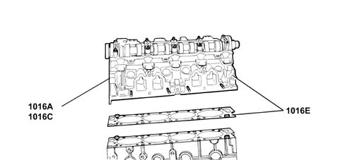
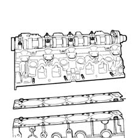

SUBASSEMBLY GRAPHIC INDEX
- Path
- Descriptions > 10 ENGINE > 1016 CYLINDER HEAD/S > SUBASSEMBLY GRAPHIC INDEX
- Kind
- system description
- Applies to
- engines: 2.0 16V; all production periods; only with equipment: Methane and GPL
- Interactive page
- https://sloeber94.github.io/elrnDB-fDct/en/#/244000373
Applies to: engines: 2.0 16V; all production periods

CONSTRUCTION SPECIFICATIONS
The cylinder head is one-piece in aluminium alloy.
Applies to: engines: 2.0 16V; all production periods; only with equipment: Methane
The cylinder head is the monolith type made from aluminium alloy with the same specifications as the cylinder head for petrol operation with the exception that the exhaust and inlet valve seats are made from a special material to prevent oxidation by the methane combustion products.
Applies to: engines: 2.0 16V; all production periods; only with equipment: GPL
The cylinder head is one-piece in aluminium alloy. Its specifications are the same as the petrol system cylinder head except that the intake and exhaust valves are made out of special material to prevent excessive, premature wear due to the poor lubricant properties of the LPG.
Applies to: engines: 2.0 16V; all production periods; only with equipment: Methane
